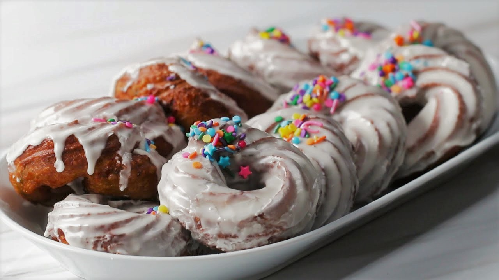

Ingredients for 10 crullers
| Unsalted butter |
1 cup(230 g) |
| Water |
1¼ cups(300 ml) |
| Milk |
1¼ cups(300 ml), 4 tablespoons for GLAZE |
| Granulated sugar |
1¼ cups(50 g) |
| Salt |
1 teaspoon |
| All purpose flour |
1 cup(125 g) |
| Whole wheat flour |
½ cup(65 g) |
| Baking powder |
2 teaspoons |
| Large eggs |
5 |
| Vanilla extract |
2 teaspoons, 1 teaspoon for GLAZE |
| Rainbow sprinkles, more other toppings |
⅓ cup(65 g) |
| Canola oil |
8 cups(1.9 L) |
| Powdered sugar |
4 cups(480 g) for GLAZE |
| Cream cheese, softened |
3 tablespoons for GLAZE |
Directions
- In a large pot over medium heat, combine the butter, water, milk, sugar, and salt. Whisk until the butter is melted and the mixture is steaming, about 5 minutes.
- Quickly whisk the all-purpose and whole wheat flours and the baking powder into the hot milk mixture. Continue cooking, stirring constantly, for 5 more minutes. Remove the pot from heat and stir with a spatula to cool the dough.
- When the dough is no longer hot to the touch, add the eggs one at a time, stirring to incorporate before adding the next.
- Add the vanilla and sprinkles and stir to distribute evenly.
- Transfer the dough to a piping bag or zip-top bag fitted with a large star tip.
- On a parchment-lined baking sheet, pipe 4-inch (10-cm) circles of dough. Chill in the freezer until solid, about 20 minutes.
- Meanwhile, make the glaze: In a large bowl, combine the powdered sugar, milk, vanilla, and cream cheese. Whisk until smooth and runny. Set aside.
- Heat the oil in a large pot until it reaches 350°F (180°C).
- Carefully add the crullers to the hot oil. Fry about 3 at a time for 4-5 minutes, flipping halfway, until golden brown. The fried crullers should feel much lighter than they were originally. Transfer the fried crullers to a wire rack set over a baking sheet.
- While still warm, dip one side of the crullers in the glaze. Return to the wire rack and allow excess glaze to drip off. Top with sprinkles.
- While still warm, dip one side of the crullers in the glaze. Return to the wire rack and allow excess glaze to drip off. Top with sprinkles.While still warm, dip one side of the crullers in the glaze. Return to the wire rack and allow excess glaze to drip off. Top with sprinkles.